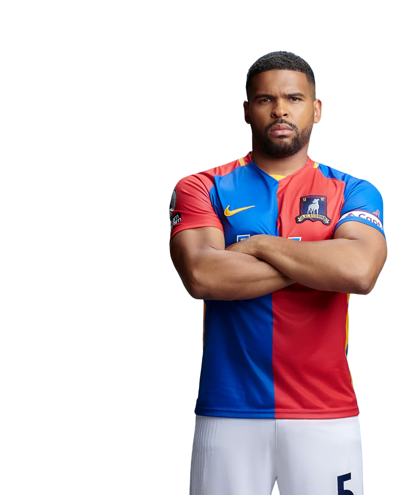

5
← Back to squad
IsaacMcAdoo
- Position
- Centre Back
- Squad number
- 5
- Nationality
- English
- Role
- Captain
Isaac McAdoo is AFC Richmond's commanding centre-back and club captain. A physically powerful defender, McAdoo is known for his strength, presence and competitive approach to the game.
Over time, Isaac developed into one of the most influential figures in the Richmond dressing room. His leadership qualities saw him take on the captaincy, where he became responsible not only for organising the defence but also for representing the players on and off the pitch.
A committed and passionate defender, McAdoo brings aggression, determination and personality to Richmond's back line.